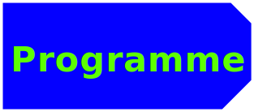

À Propos
Le festival d'arts numériques eikonica de Fribourg est l'événement à ne pas manquer pour tous les amateurs de nouvelles technologies, d'art contemporain et tous les curieux.
Du 13 au 15 octobre, venez explorer une grande variété d'oeuvres numériques, allant de l'animation à la réalité virtuelle en passant par les installations interactives. Vous pourrez rencontrer des artistes locaux et internationaux, assister à des conférences passionnantes et participer à des ateliers créatifs. Deux concerts à fri-son permettront de prolonger les festivités.
EVENEMENTS
EXPOSITIONS
Num.1 Art algorithmique : Créations génératives
Cette exposition se concentre sur l'art généré par des algorithmes et des processus informatiques. Différents artistes présentent des œuvres créées par des algorithmes et de l’intelligence artificielle. Les visiteurs pourront admirer des tableaux, des sculptures et des installations interactives où les formes, les couleurs et les mouvements sont générés de manière autonome par des programmes informatiques. L'exposition met en évidence la créativité et l'expression artistique qui peuvent découler de la collaboration entre l'homme et la machine.
SALLES 201 et 202
Ateliers
Num.2 "Pixel Art" pour les enfants
Cet atelier sera spécialement conçu pour les enfants et leur permettra de s'initier au pixel art. Les participants apprendront comment créer des images pixelisées et pourront laisser libre cours à leur créativité en utilisant différents logiciels.
Vendredi 13 octobre 2023
16h- SALLES 103
7 à 12 ans, sur inscription
Concerts
Num.1 Concert d'ouverture avec
l’artiste fribourgeois "Kinetic Flow"
Le concert d'ouverture sera donné par l'artiste fribourgeois Kinetic Flow, qui est connu pour sa musique électronique innovante et sa présence scénique captivante. Les participants pourront profiter d'un spectacle immersif son et lumière et découvrir la fusion de l'art numérique et de la musique électronique en direct.
Vendredi 13 octobre 2023
16h- SALLES 103
7 à 12 ans, sur inscription
